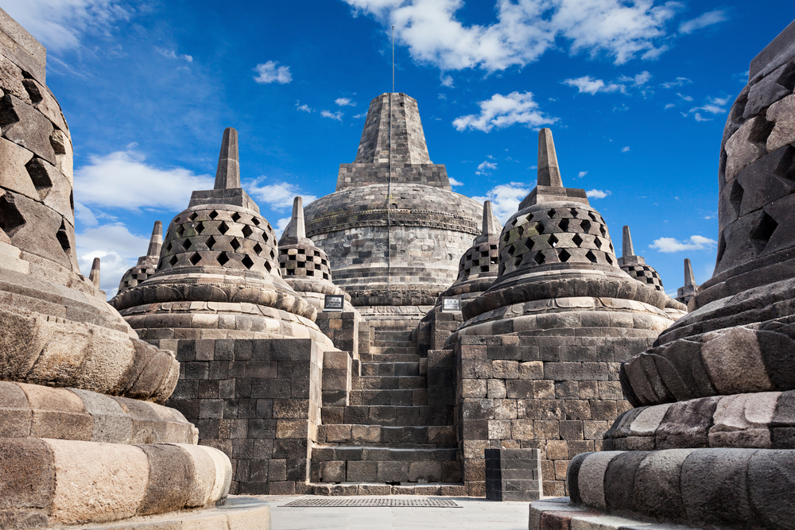
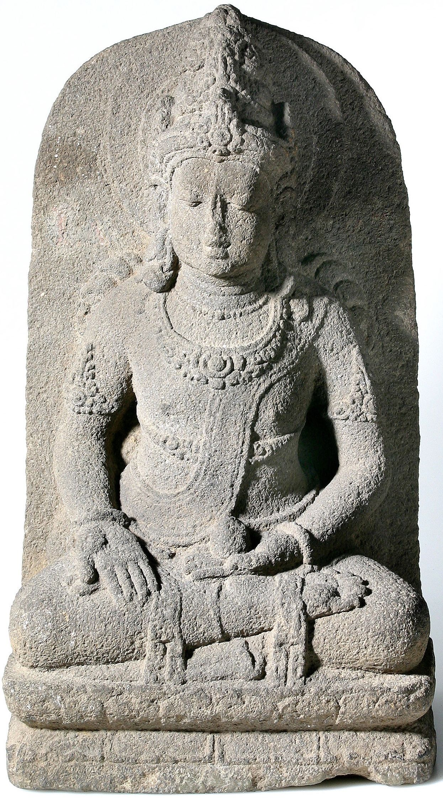
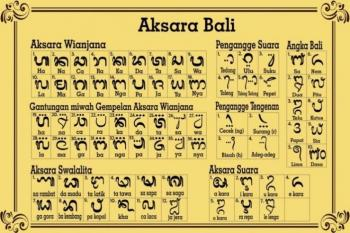
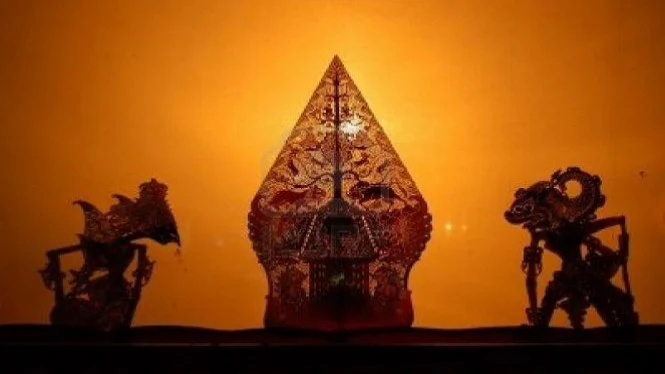
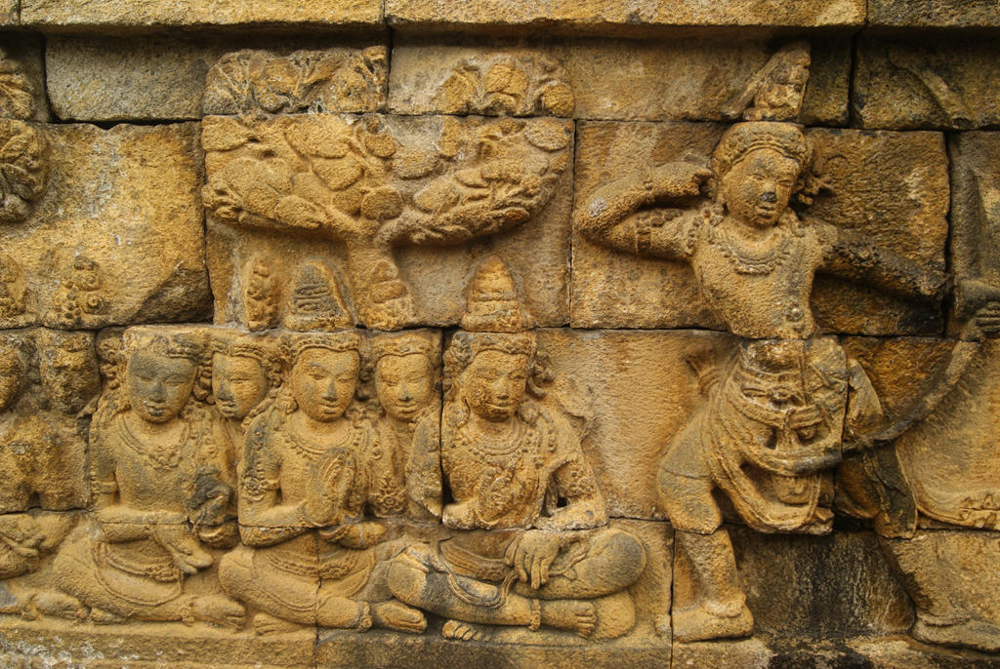

Peninggalan kerajaan Hindu-Buddha yang masih relevan sampai saat ini
About Us
Tugas
1. Candi

source gambar: beritagar
Candi merupakan bangunan peninggalan sejarah yang memiliki fungsi tertentu.
Jenis candi ada 2 yaitu:
- Candi Hindu: Menaruh abu jasad.
- Candi Buddha: Tempat ibadah.
2. Arca

source gambar: pinterest
Arca adalah patung yang biasanaya terbuat dari batu, yang mennyerupai
manusia, binatang, atau dewa. Contoh:
- Arca Airlangga dari Kerajaan Mataram Kuno di Jawa Timur.
- Arca Kertarajasa Jayawardhana, pendiri kerajaan Majapahit.
- Prajna Paramitha perujudan Ken Dedes dari kerajaan Singosari.
3. Sastra

source gambar: freedomsiana
Kitab merupakan salah satu peninggalan pada zaman Hindu-Buddha yang amat penting
Karena,
berisikan tentang riwayat kerajaan yang menjadi sumber sejarah yang kitakenal hari ini.
Berikut beberapa kitab yang merupakan peninggalan sejarah Hindu-Buddha:
- Kerajaan kediri: Smaradhahana (Mpu Darmaja).
- Kerajaan majapahit: Negara Kertagama (Mpu Prapanca).
4. Arsitektur

source gambar: ruangguru
Salah satu pengaruh yang masih bertahan hingga saat ini adalah arsitektur
pada bangunan di masa lalu
yang banyak digunakan oleh bangunan masa kini.
Beberapa bagian bangunan yang terpengaruh adalah
pembagian bangunan
dan halaman, atap bangunan, dan gapura.
5. Bahasa

source gambar: quizizz
Pada awal masuknya HIndu-Buddha, bahasa Snasekerta hanya digunakan oleh para pendeta.
Bahasa Pali adalah bahasa
yang digunakan oleh masyarakat pada masa itu.
Namun, pada akhirnya, bahasa sansekerta lah yang memengaruhi Bahasa Indonesia.
Contoh kata serapan dari bahasa sansekerta:
- Baca dari kata Vaca.
- Cabai dari kata Cavi.
- Durhaka dari kata dorhaka.
6. Upacara & tradisi

source gambar: viva
Contoh tradisi yang masih bertahan sampai saat ini yaitu, ngaben dan tradisi potong gigi.
Tradisi ngaben sendiri adalah upacara kematian
dengan membakar mayatnya dan abunya dibuang kelaut.
Tujuannya adalah untuk melepaskan Sang Atma (roh) dari belenggu keduniawian sehingga
dapat dengan mudah bersatu dengan Tuhan (Mokshatam Atmanam).
Ada pula tradisi wayang yang masih bertahan pada saat ini. Wayang mengalami percampuran
dengan kebudayaan India melalui cerita-cerita seperti cerita Ramayana dan Mahabarata.
Pagelaran wayang hingga sekarang masih sering diadakan di Indonesia
mulai dari pagelaran wayang kulit, wayang golek.
7. Relief

source gambar: deviantart
Relief adalah pahatan tulisan atau gambar yang biasanya terdapat pada dinding candi.
Beberapa relief biasanya merupakan gambaran kehidupan pada
suatu masa atau pengalaman hidup raja yang bertahta.
8. Atap bangunan

source gambar: blogspot
Pengaruh arsitektur juga dapat dilihat pada atap bangunan.
Contohnya adalah Masjid Agung Demak yang menggunakan atap tumpang seperti pada pura.